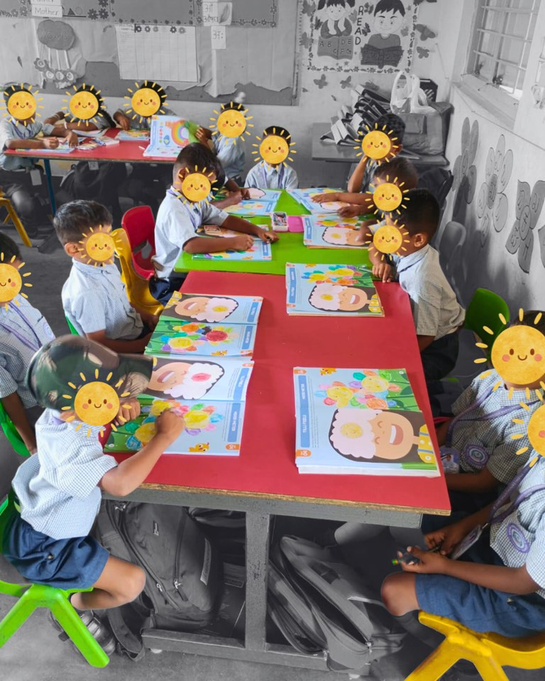
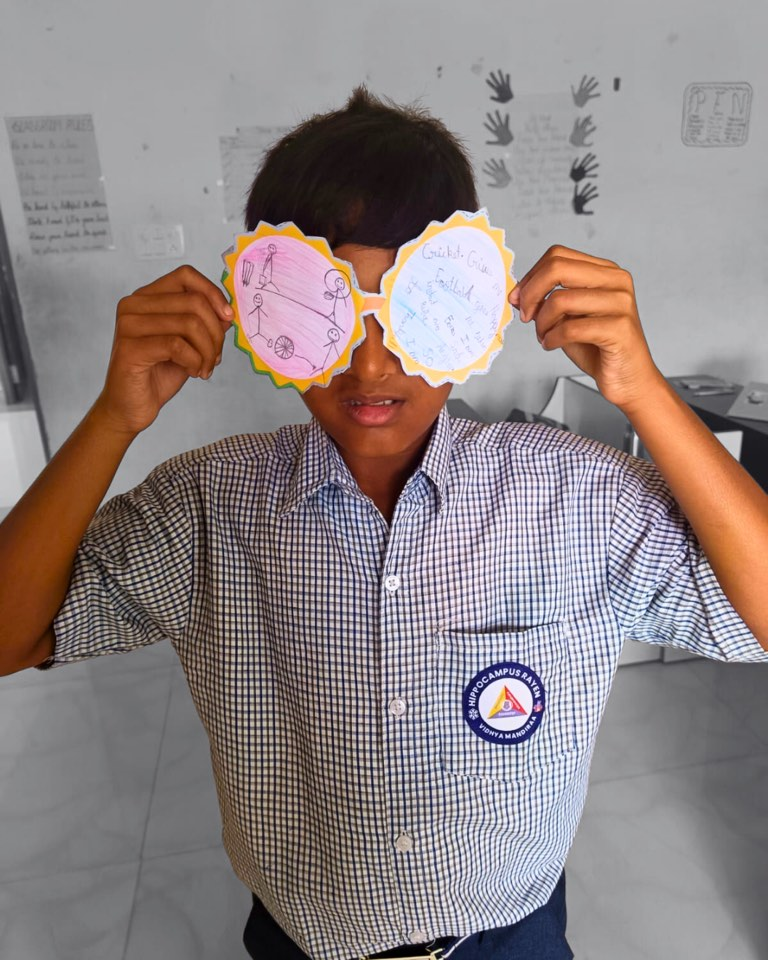

Schools that measure the whole child
From a three-year partnership reshaping thousands of childhoods to a research-practice collaboration built on measurement.
Measure. Ask. Intervene.
The same three-step model our partner schools run, every term.
See the whole child
Every child is assessed across all 12 foundational skills from three lenses — teacher, parent, and the child’s own play-based tasks — three times a year.
Guidance grounded in data
Teachers ask AskTilli about any child and get specific, practical next steps grounded in that child’s own assessment record — not generic advice.
Turn insight into a plan
Each term, teachers design a support plan for their class, see multi-informant data on those children, then redesign it — a dashboard becomes a concrete next step.


(“stop-and-think”), 2025–26
Tilli’s longest-standing partner: three years, and now more than 3,500 children across the Hippocampus network. Over the 2025–26 year, teachers reported growth in every skill Tilli measures: self-awareness up 20%, conflict management up 23%, and impulse control up 28%. It’s the clearest proof of Tilli’s core belief: given time and the right tools, foundational skills compound.
A research-practice partnership built on one idea: measure the whole child, not just the answer sheet. From LKG to Grade 2, Tilli looks at 12 developmental skills through three independent lenses (parent, teacher, and the child’s own play-based tasks), so leaders can see where each child genuinely is, and read early-years data as growth emerging on schedule rather than a child falling behind.
One of Sri Lanka’s most respected girls’ schools has brought SEL into Grade 1 with Tilli. What won them over was a model where teachers don’t just receive data, they use it. In Tilli’s intervention sessions, each teacher designs a support plan for her class, sees multi-informant data on those same children, then redesigns it, turning a dashboard into a concrete next step for every learner.
See how Tilli’s research-backed approach delivers measurable results. Explore our assessment, the evidence, and our Stanford research.
Top results
-
95% of teachers rate Tilli’s training highly effective — adoption built in, not bolted on.
-
9 in 10 children improved emotion regulation in a single term.
-
Built at Stanford, backed by UNICEF, validated with 12,510 children.
What Tilli asks of your school.
Fewer surprises at the Parent‑Teacher Meet. Nothing new on the timetable.
- Start of yearA baseline across all 12 skills
- Every weekOne 30-minute lesson
- End of each termReassessment and parent reports
- Year endA report for your Management Committee